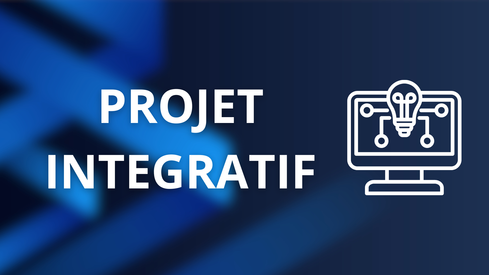

Projet Intégratif

Présentation du projet
Le projet intégratif est un projet réalisé dans le cadre de mes études de Réseaux et Télécommunications à l'IUT d'Annecy en 1ère année. Il m'a permis de mettre en pratique les compétences acquises dans un projet concret et complet.
Objectif du projet
L’objectif est de réaliser un réseau informatique pour une petite entreprise divisée en 4 services : R&D, Production, Logistique et Bureau. Le réseau comprend un serveur Windows 2019 avec les services DHCP et DNS.
Composition du réseau
- Un serveur Windows 2019 pour l’authentification des utilisateurs
- Un serveur de fichier Windows 2019 servant au stockage des dossiers utilisateurs et des dossiers partagés
- Un serveur sous Debian12 permettant d’héberger l’extranet
- Un switch
- Un routeur
Organisation du projet
THEME 1 - Reformulation du projet
La première phase du projet consiste à évaluer avec précision notre aptitude à analyser et à interpréter en profondeur le cahier des charges fourni par le client, en identifiant les besoins, les contraintes et les objectifs spécifiques qui y sont décrits, puis à reformuler l’ensemble de ces informations de manière claire et structurée sous la forme d’une proposition de projet détaillé, compréhensible et professionnel, destiné à faciliter la communication avec le client et à poser les bases de la planification et de la réalisation ultérieure du projet.
J’ai donc pris soin de rédiger une roposition de projet en m’appuyant sur l’ensemble des informations et des exigences spécifiées dans le cahier des charges qui m’a été fourni. Cette proposition de projet a été élaboré de manière à refléter fidèlement les besoins et les attentes du projet, en incluant notamment un schéma complet de conception du réseau informatique, permettant de visualiser l’architecture, les interconnexions et les flux de données prévus. Vous pouvez consulter ce document complet ainsi que le schéma en cliquant sur le bouton ci-dessous.
THEME 2 - Mise en réseau et installation système
Cadrage du projet
Suite aux retours du client, nous avons ajusté notre proposition initiale pour inclure la segmentation du réseau en VLAN avec un plan d’adressage précis et des conventions de nommage pour les postes et serveurs (ex. srv-debian-1, Bureau-PC01).
Objectifs techniques
Nous avons préparé une maquette VirtualBox comprenant :
- Un routeur et un switch configuré avec tous les VLANs
- Un serveur Debian 12 avec Apache2
- Un serveur Windows 2019
- Un PC Windows 10 pour le réseau bureautique avec Nmap.
Résultat
L’infrastructure virtualisée fonctionne entièrement, respecte les VLANs et le plan d’adressage, permet la communication inter-réseaux et propose un service web accessible depuis le serveur Debian, prête pour la démonstration client.
THEME 3 - Système – Environnement Microsoft et Linux
Retour d’experience
Le thème 2 nous a permis de virtualiser et configurer le réseau. Pour le thème 3, nous simplifions la topologie afin de concentrer le travail sur la configuration des systèmes et des services. La méthodologie reste essentielle : anticiper les problèmes, tester les VMs, réaliser des sauvegardes et utiliser des snapshots pour sécuriser les configurations.
Infrastructure
Mettre en place un environnement mixte Windows/Linux sur VirtualBox comprenant : Windows Server : contrôleur de domaine, serveur DHCP et serveur de fichiers, gestion de 100 utilisateurs répartis en groupes (Bureau, Logistique, Production, Recherche), et configuration des lecteurs P: (personnel) et U: (partagé). Postes Windows 10 : intégration au domaine SAELogin.local, profils itinérants, page d’accueil personnalisée selon le groupe de l’utilisateur. Serveur Linux (Debian 12) : serveur intranet avec Apache2 hébergeant un site interne pour les collaborateurs, accessible via les postes Windows.
Objectifs
Réseau simplifié en NAT sur VirtualBox, sans serveur DHCP intégré, avec adresses IP fixes attribuées par le serveur DHCP Windows. Tous les postes et serveurs doivent pouvoir communiquer entre eux et accéder à Internet. Utilisation de WinSCP et Notepad++ pour gérer le serveur Linux depuis les postes Windows. Respect strict des conventions de nommage et des droits d’accès pour garantir la sécurité et la clarté de l’infrastructure.
Résultat
L’infrastructure fonctionne entièrement, avec authentification centralisée, partage sécurisé des fichiers, accès intranet pour chaque groupe, et environnement cohérent sur tous les postes, prête pour la démonstration client.
THEME 4 - Système – Partie Linux
Objectif
ce quatrième thème consiste à configurer un serveur Linux Debian 12 en environnement sans interface graphique, administré en SSH depuis le poste hôte. La VM est configurée en mode pont et sert à gérer un serveur FTP pour l’accès aux dossiers partagés
Personnalisation et services
Renommage de la machine selon la nomenclature Installation du service FTP pour permettre aux utilisateurs de se connecter et d’accéder à leur dossier personnel (/ftp/username). Création d’un groupe « enseignant » pour gérer les utilisateurs.
Gestion des utilisateurs
Création manuelle de comptes spécifiques via le script myNewUser.sh, avec vérification de la double saisie du mot de passe. Chaque utilisateur a un accès Lecture/Écriture/Suppression sur son dossier et Lecture seule sur les dossiers des autres. Automatisation de la création d’utilisateurs avec myNewUser1.sh (paramètres individuels) et myNewUser2.sh (création en masse pour 100 utilisateurs).
Analyse et contrôle
Utilisation de Wireshark pour analyser les échanges FTP et vérifier la sécurisation des connexions.
Bonnes pratiques
Édition des fichiers via WinSCP ou VSCode en SSH pour plus de confort et de sécurité. Méthodologie respectée : tester, sauvegarder, automatiser pour garantir la fiabilité du serveur et faciliter la démonstration finale.
Résultat
Le serveur Linux est entièrement fonctionnel, avec un service FTP sécurisé, des utilisateurs correctement configurés et des scripts automatisés permettant une gestion rapide et cohérente des comptes.